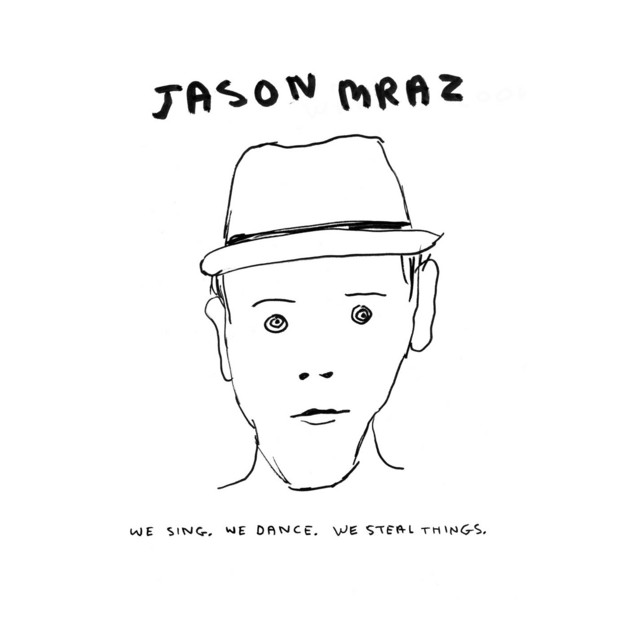
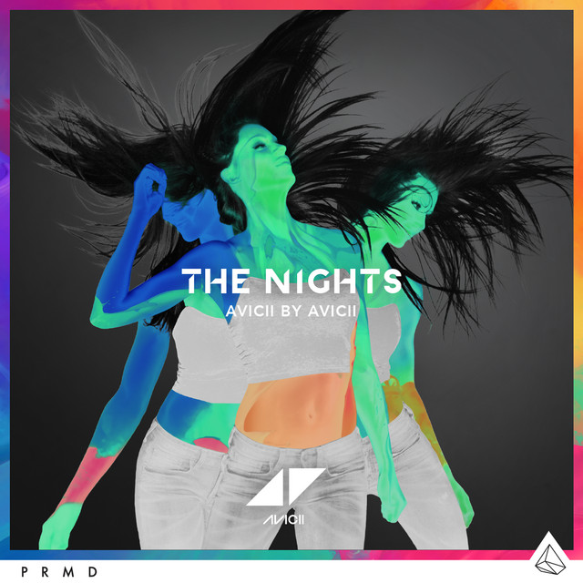

Músicas Favoritas
Quem sou eu?
Livros Favoritos
Séries Favoritas
Músicas Favoritas
I'm yours - Jason Mraz

The Nights - Avicii

Locked Out of Heaven - Bruno Mars
Runaway Baby - Bruno Mars
Congratulations - Post Malone